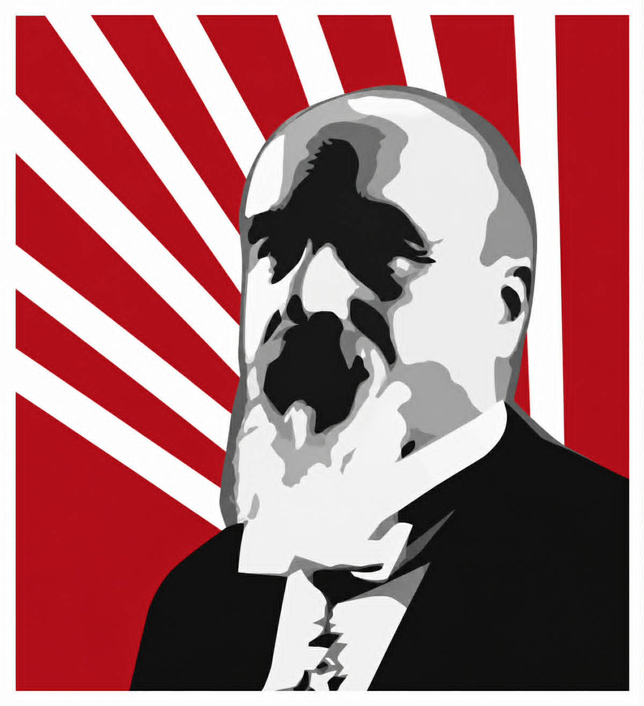
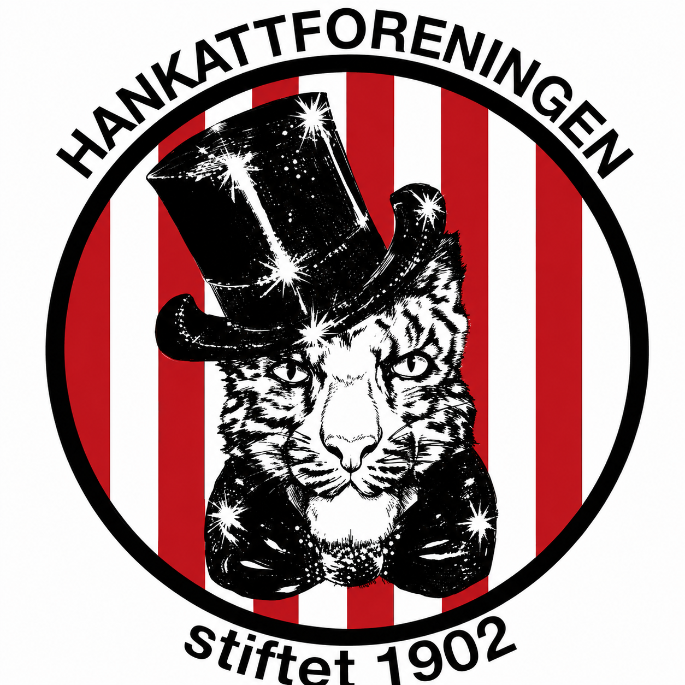
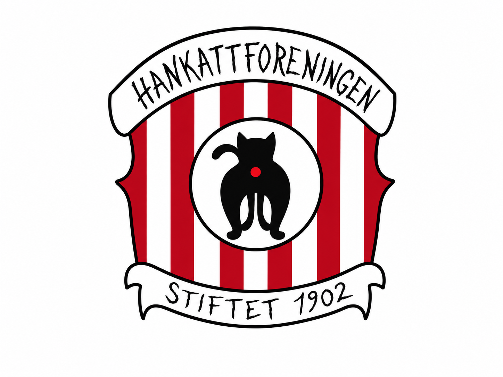

Dagens design (index.html nå) — uendret, som referanse



Hankattforeningen
stiftet 1902
Haandens tugt over kulturen til foryngende frugt
— Salig Johan Leuthäuser Hirsch
Alternativ 1 — Ett hero-emblem
Haandens tugt over kulturen til foryngende frugt
Alternativ 2 — Triptyk som våpenskjold
Hankattforeningen
stiftet 1902
Alternativ 3 — Motto som hovedelement
Haandens tugt over kulturen
til foryngende frugt
til foryngende frugt
Hankattforeningen · stiftet 1902
Alternativ 4 — Sirkusplakat
✦ ❧ ✦ ❧ ✦
stiftet 1902
✦ ❧ ✦ ❧ ✦
Alternativ 5 — Emblem øverst, to som footer-segl
Hankattforeningen
stiftet 1902
Haandens tugt over kulturen til foryngende frugt